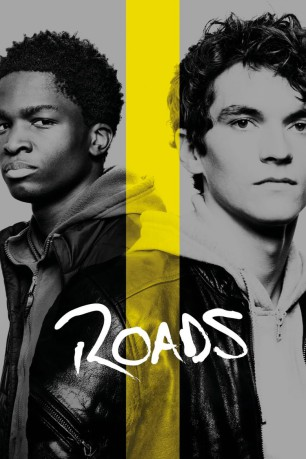

#12188 Roads
 
 IMDB-Wertung: 6.0 / 10
IMDB-Wertung: 6.0 / 10  Tomatometer: 80
Tomatometer: 80  Metascore: 0
Metascore: 0 
Der 18-jährige Brite Gyllen (Fionn Whitehead) klaut während eines Familienurlaubs in Marokko das luxuriöse Wohnmobil seines Stiefvaters, um nach Frankreich zu reisen und dort seinen echten Vater zu suchen. Unterwegs sammelt er noch einen gleichaltrigen Kongolesen namens William (Stéphane Bak) auf, der nach Europa flüchten will, um dort seinen verschwundenen Bruder aufzuspüren. Unterwegs freunden sich die beiden jungen Männer während ihrer Reise immer besser an und müssen sich schließlich einer Reihe von Entscheidungen stellen, die von großer Wichtigkeit für ihr weiteres Leben sein werden...
Jahr: 2019
Dauer: 99 Minuten
FSK: 6
Land: Deutschland Studio: StudioCanalTonspuren: DTS - ,
Untertitel:
Auflösung: 1080p (1920x808) Größe: 6338 MB
Genre: Drama, Komödie, Abenteuer
Regisseur: Sebastian Schipper
Drehbuch: Sebastian Schipper, Oliver Ziegenbalg
Soundtrack:
Darsteller:
- Fionn Whitehead als Gyllen
 Stéphane Bak als William
Stéphane Bak als William Ben Chaplin als Paul
Ben Chaplin als Paul Moritz Bleibtreu als Luttger
Moritz Bleibtreu als Luttger- Marie Burchard als Valerie
- Paul Brannigan als Alan
- Josep Maria Alejandre als Doorman
- Ricard Balada als Erasmus student
- Kris Hunter als
- Hamza Kadri als Businessman
- Claudia Trujillo als
- Noé Blancafort als Customs police
- Yann Ebonge als Congolese man 2
- Genís Lama Montosa als Ferry Guy
- Christian Mupondo als Congolese man 1
Datei: X:\2019(N-Z)\Roads (2019, FSK6, 1920x808).mkv seit 30.12.2019
Festplatte: HD 2018(G-Z)-2019(A-Z)
 Es gibt insgesamt 62 Filme in der Gruppe '2019(N-Z)'
Es gibt insgesamt 62 Filme in der Gruppe '2019(N-Z)'